Pos Volga Responsive Prestashop Theme 1.7
Pos Volga is a Mega Store Responsive Prestashop theme with advanced admin modules, extremely customizable and fully responsive. It is suitable for every type of store. It is a standalone design package so you can easily create your own sub-themes.
And here you can find out more about theme updates, new features and about our upcoming themes:
- Follow us on Facebook
- Follow us on Twitter
- Follow us on Posthemes
PosThemes,
Installation
Before you get started, make sure you have all the requirements available: Server space at a Hosting Provider, Domain Name, FTP client, Text Editor.
- System: Unix, Linux or Windows. Unix is highly recommended.
- Web server: Apache Web server 2.0 or later.
- PHP 5.4 or later.
- MySQL 5.0 or later.
- At least 128 Mb of RAM on your server.
To install this theme you must have a working version of Prestashop already installed. For information in regard to installing the Prestashop platform, please see the Prestashop Wiki : http://doc.prestashop.com/display/PS17/Getting+started
After Prestashop is installed, you must delete “install” folder in your Prestashop.
Install
For each package, you will have: quickstart package, theme package, PSD. There are two ways to install a Prestashop Theme:
-
Install Quickstart Package: By using the quickstart package, you will set the theme exactly as our Demo with sample data.
-
Install Template : If you have available shop, you can install only template.
Enabling Static Block and Static Footer with other language
In your template, if there are 3 languages or more, please enabling static block by below guide:
- Login your prestashop admin
- Navigate to International > Localization .

- Choose tab Languages.

- Navigate to Modules > Modules and Services

- Choose “Installed modules” tab

- On Pos Staticblock or Pos Static Footer module, click "Configure" button.

- Click "Edit" button of your selected block
- Choose Source Code
 to show code HTML of this block in English. Then copy source code.
to show code HTML of this block in English. Then copy source code.
- 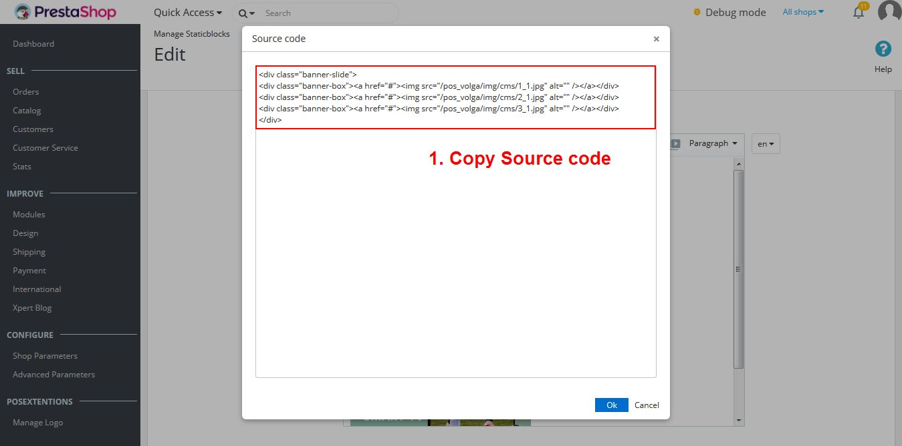
- Click
 to choose language you want to translate. Choose Source Code
to choose language you want to translate. Choose Source Code - 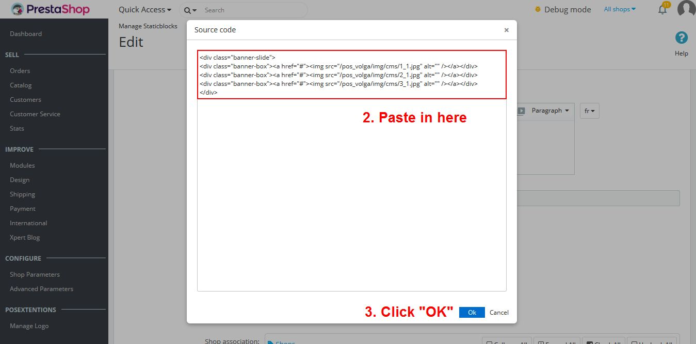
- Click Save button when you finish
Install Quickstart
You install new website with database sample. After you install your website like our demo.
Each template we update has its quickstart, here, we guide quickstart installation in general.
Create new database:
Open your Browser and type : localhost/phpmyadmin or yourdomain/phpmyadmin
-
Then create database
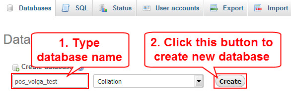
-
Click database you have just created
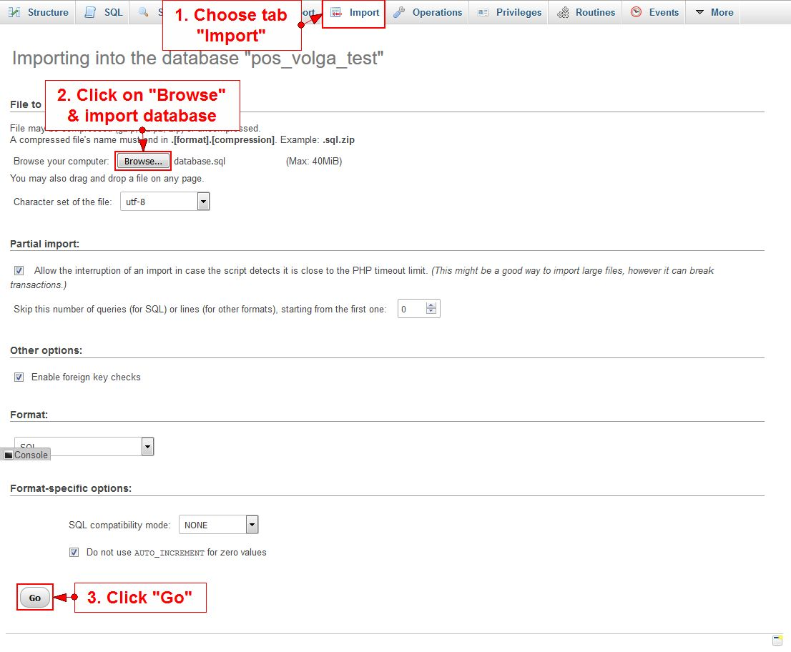
-
After import database, click that database and edit table ps_shop_url

-
Change domain, domain_ssl, physical_uri based on your data.
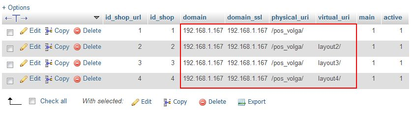
-
Connect to file config \app\config\parameters.php, change database_host, database_name, database_user, database_password:

-
Generate file .htaccess
-
Login your prestashop admin http://[Pretashop host or IP]/[path to Prestashop]/admin414670kgy
- Username: demo@posthemes.com
- Pass: admin123
-
Navigate to Shop Parameters > Traffic & SEO, at tab SEO & URLs, set up URLS and click "Save"

-
Note:
- If you use localhost you shoud generate file .htaccess
- If you use normal hosting, you have to set permission 666 before you generate file .htaccess
-
- Finish installer.
Install Template
You must install default prestashop before. You can see instruction install default prestashop on Prestashop Wiki: http://doc.prestashop.com/display/PS17/Installing+PrestaShop
- To install this theme automatically do the following the video:
- Config show left or right column in each page
- 1. Navigate to Advanced Parametters > Performance
- 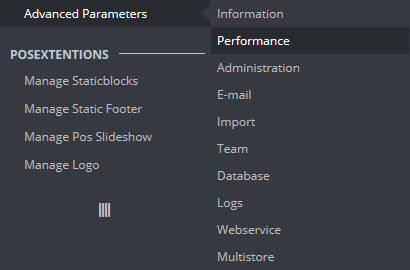
- 2. Click "Clear cache"

- 3. Navigate to Design > Theme & Logo
- 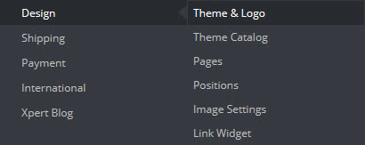
- 4. Choose Choose layout
- Config Pos Volga 1 Layout

- Config Pos Volga 2 Layout
- 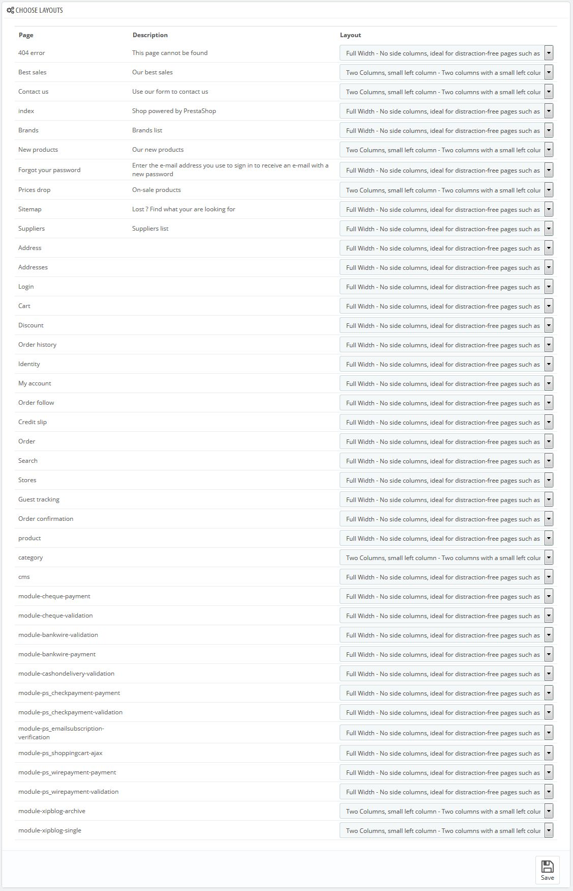
- Config Pos Volga 3 Layout
- 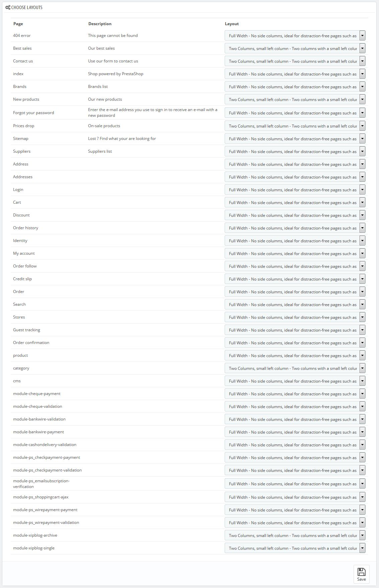
- Config Pos Volga 4 Layout

- Finish installer.
How to add new language
When working with different languages in PrestaShop, you should add new language by this guide
Create or edit size image and Regenerate thumbnails
- Navigate to Design > Images Settings
- 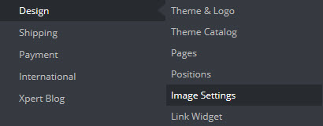
- Create or edit size image
- 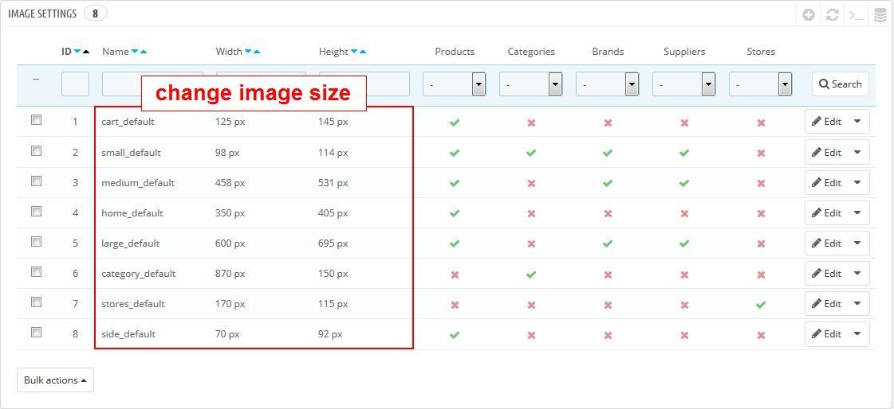
- Choose Regenerate thumbnails button
- After that, we got:


PrestaShop’s Features
User will also be able to efficiently manage your PrestaShop site without related the programming skill. You work in the front-office interface directly (in the Administration Area), which can be helpful to everyone, special for shop owners. To find more informations, please read on http://doc.prestashop.com/display/PS17/User+Guide
Note: When you finish install template, you should disable cache. This step will help your Prestashop site active normally.
- Advanced Parameters > Performance
- At field Cache, choose No

- Click Save button
Modules names and Static Blocks on front-end
Note
- BLACK texts: name of blocks.
- RED texts: name of modules.
#Layout1
List of Modules
- Pos list category products
- Pos New Products module
- Pos Special Products module
- Pos Countdown time price
- Pos Featured Products module
- Pos Megamenu Customer
- Vertical Mega Menu Customer
- Pos Slideshow Slider
- Pos search products by category
- Rotator img
- Pos Logo
List of Staticblocks & Static Footer
- Banner Slide
- Home Banner
- Customer Support
- Vegamenu Statics
- About Us
- Payment Block
- Copyright Block
- Links Footer
Home page
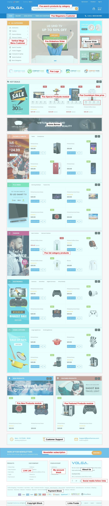Category page

Details page
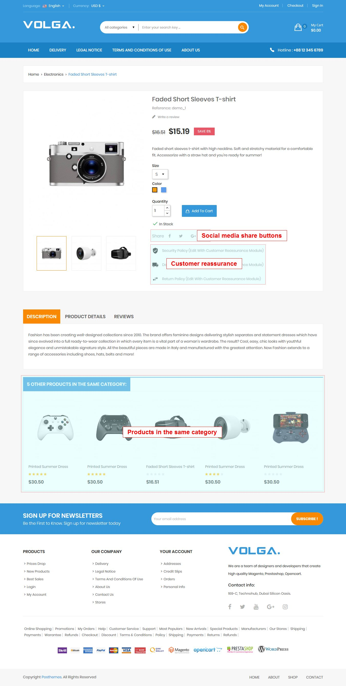Vertical Mega Menu Customer

#Layout2
List of Modules
- Pos list category products
- Pos New Products module
- Pos Special Products module
- Pos Countdown time price
- Pos Featured Products module
- Pos Megamenu Customer
- Vertical Mega Menu Customer
- Pos Slideshow Slider
- Pos search products by category
- Rotator img
- Pos Logo
List of Staticblocks & Static Footer
- Banner Slide
- Static Info
- Home Banner
- Home Banner2
- Customer Support
- About Us
- Payment Block
- Copyright Block
- Links Footer
Home page
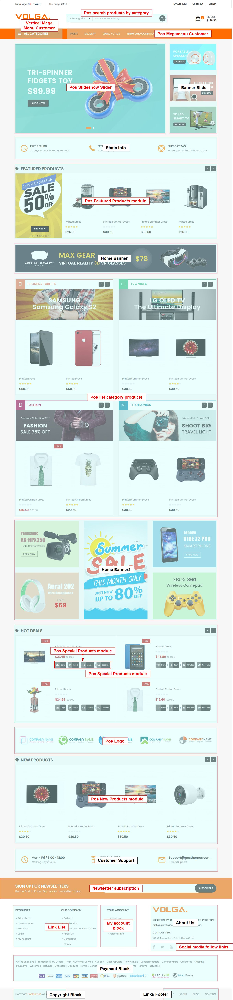Category page

Details page

#Layout3
List of Modules
- Pos list category products
- Pos New Products module
- Pos Special Products module
- Pos Countdown time price
- Pos Featured Products module
- Pos Random Products module
- Pos Bestseller products
- Pos Megamenu Customer
- Pos Slideshow Slider
- Pos search products by category
- Rotator img
- Pos Logo
List of Staticblocks & Static Footer
- Banner Slide
- Home Banner
- Home Banner2
- Customer Support
- About Us
- Payment Block
- Copyright Block
- Links Footer
Home page

Category page

Details page
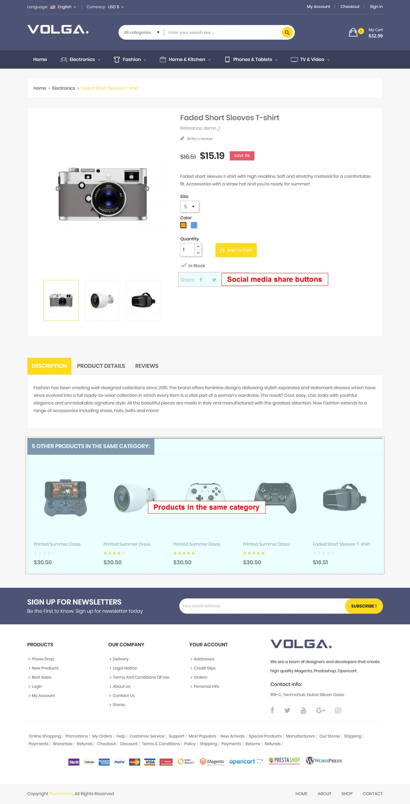#Layout4
List of Modules
- Pos list categories
- Pos New Products module
- Pos Featured Products module
- Pos Random Products module
- Pos Bestseller products
- Category Tab Slider
- Pos Megamenu Customer
- Vertical Mega Menu Customer
- Pos Slideshow Slider
- Pos search products by category
- Rotator img
- Pos Logo
List of Staticblocks & Static Footer
- Home Banner
- Home Banner2
- Customer Support
- About Us
- Payment Block
- Copyright Block
- Links Footer
Home page

Category page
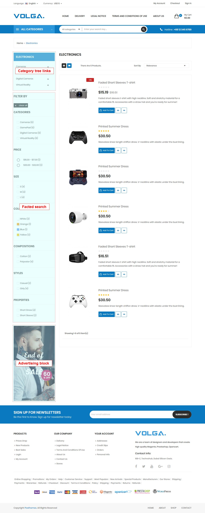Details page

How to edit contact information on header
- Login your prestashop admin
- Navigate to Shop Parameters > Contact

- Choose tab Stores. At CONTACT DETAILS section, edit contact information of your store

- Click “Save” button to save changes
Static Blocks and Static Footer
Static Block
- How to add Static Block
- Login your prestashop admin
- Navigate to Modules > Modules and Services
- Choose “Installed modules” tab
- On Pos Staticblock , click "Configure" button.
- Choose Add New button 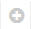 to add new static block

- Enter the value of parameters and click "Save" button when you finish.
- How to edit Static Block
- Login your prestashop admin
- Navigate to Modules > Modules and Services
- Choose “Installed modules” tab
- On Pos Staticblock , click "Configure" button.
- Choose Static Block you want to edit
- Change the value of parameters. If you want to change content, please click Source Code button to show code HTML of this block. You can change the content by editing HTML.
- Click “Save” button to save changes
Static Footer
- How to add Static Footer
- Login your prestashop admin
- Navigate to Modules > Modules and Services
- Choose “Installed modules” tab
- On Pos Static Footer , click "Configure" button.
- Choose Add New button to add new static footer
- 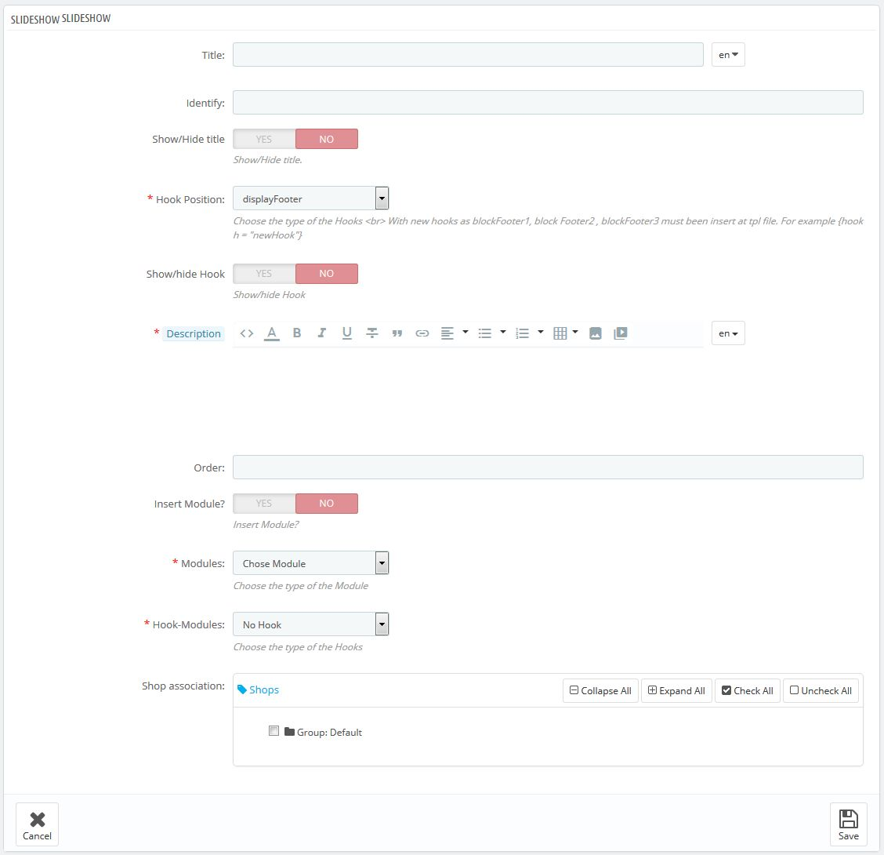
- Enter the value of parameters and click "Save" button when you finish.
- How to edit Static Footer
- Login your prestashop admin
- Navigate to Modules > Modules and Services
- Choose “Installed modules” tab
- On Pos Static Footer , click "Configure" button.
- Choose Static Footer you want to edit
- Change the value of parameters. If you want to change content, please click Source Code button to show code HTML of this block. You can change the content by editing HTML.
- Click “Save” button to save changes
Module Config
Name and position of the modules are shown in here.
Configure Module
- Login your Prestashop admin
- Navigate to Modules > Modules and Services
- Choose “Installed modules” tab
- On selected module, click "Configure" button.
You will get a form with parameters of the module. Let's change the specified parameter with one suitable for your template.
- Click “Update” button to save config.
Pos Megamenu Customer
- Add new menu item
- 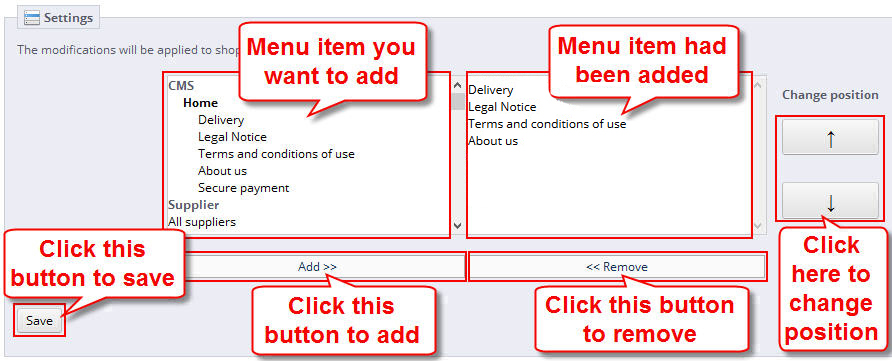
Pos Megamenu Customer module supports multiple types of menu. This module supports up to 6 link types: CMS, Supplier, Manufacturer, Categories, Products, Mega menu Top Links.
- Menu item = CMS
- 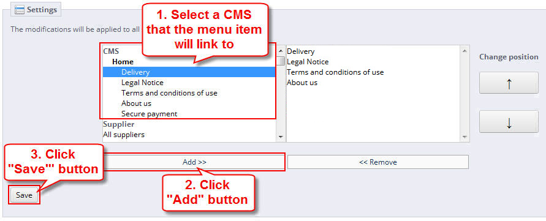
- Menu item = Supplier

If you want to add new supplier or edit them in megamenu:
- 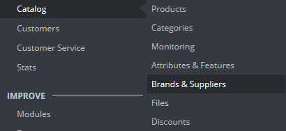
- 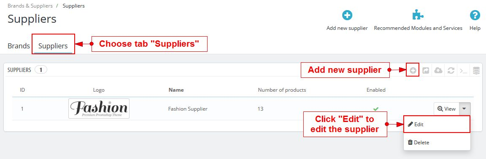
- Menu item = Manufacturer
- 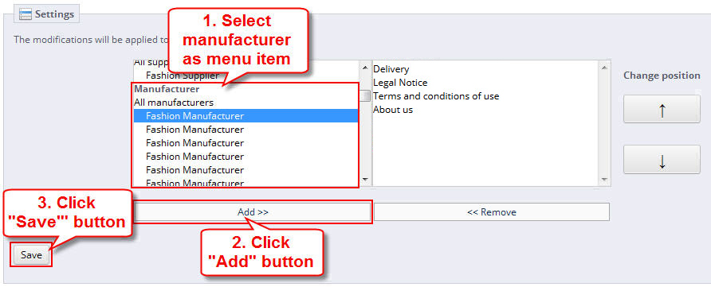
If you want to add new manufacturer or edit them in megamenu:

- Menu item = Categories
- 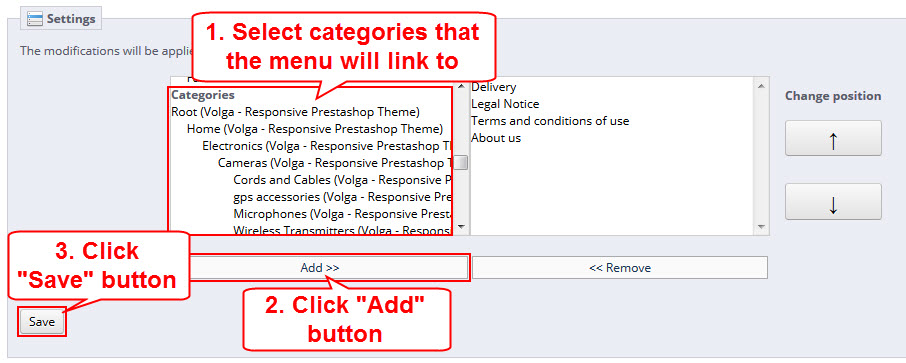
If you want to add new category or edit them in megamenu:

- 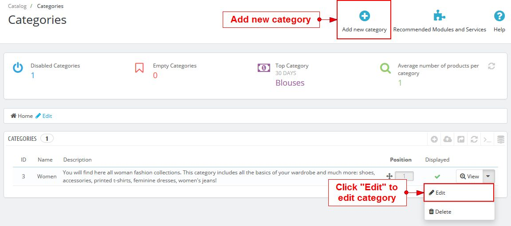
- Menu item = Products

If you want to add new product or edit them in megamenu:

- 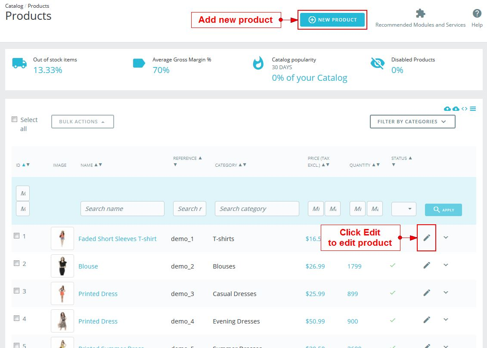
- Menu item = Mega menu Top Links


- Add Static Block to popup of a specify category
In order to display a custom block with images or other html content in the popup, use the Static Block:
- Navigate to Modules > Modules and Services
- Choose “Installed modules” tab
- On Pos Staticblock , click "Configure" button.
- Navigate to Modules > Modules and Services
- Default the custom block will be show at the bottom of the popup. But if you want to show it on the right/left of the popup, just use the ID like “pt_menu_idcat_[ID Category]_right”/“pt_menu_idcat_[ID Category]_left”
- Add CMS Block to menu item
Just use the Static Block:
- Navigate to Modules > Modules and Services
- Choose “Installed modules” tab
- On Pos Staticblock , click "Configure" button.
- Navigate to Modules > Modules and Services
Pos Slideshow Slider
It allows to put banner on hompage. You can specify link, languages and status of slide.

- How to add item in Slideshow
- Login your prestashop admin. Click "All shop", select the theme you want to add slideshow

- Navigate to Modules > Modules and Services
- Choose “Installed modules” tab
- On Pos Slideshow Slider module, click "Configure" button.
-
- At SLIDES LIST section, click Add New button
- 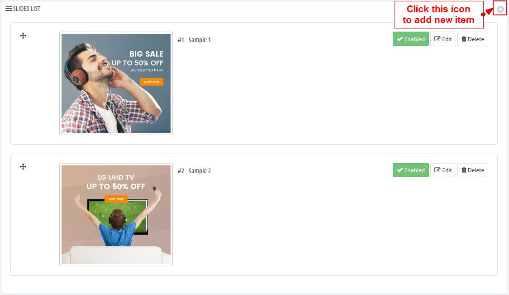
- We got:
- 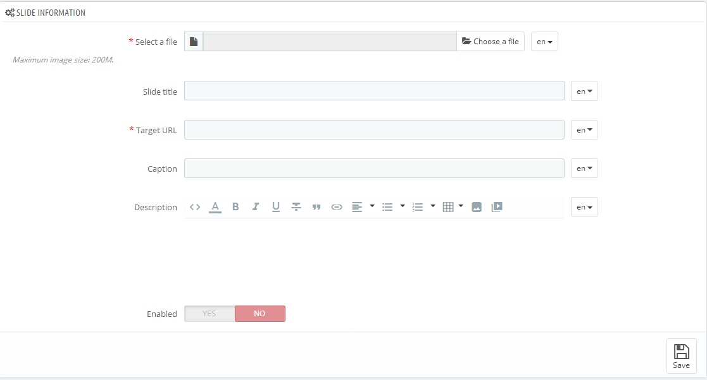
- Click “Save” button when you finish.
- How to edit item in Slideshow
- Login your prestashop admin. Click "All shop", select the theme you want to edit slide show
- Navigate to Modules > Modules and Services
- Choose “Installed modules” tab
- On Pos Slideshow Slider module, click "Configure" button.
-
- At SLIDES LIST section, click "Edit" button of your selected slide.

- Then edit

- Click “Save” button when you finish.
Pos Logo
The module allows you to configure which brand logo to display in the frontend.
- 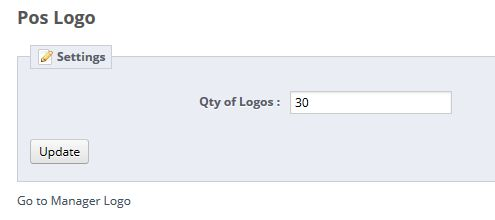
- How to add logo in slider
- Login your prestashop admin
- Navigate to Modules > Modules and Services
- Choose “Installed modules” tab
- On Pos Logo , click "Configure" button.
-
- Click “Go to Manage Logo”

- 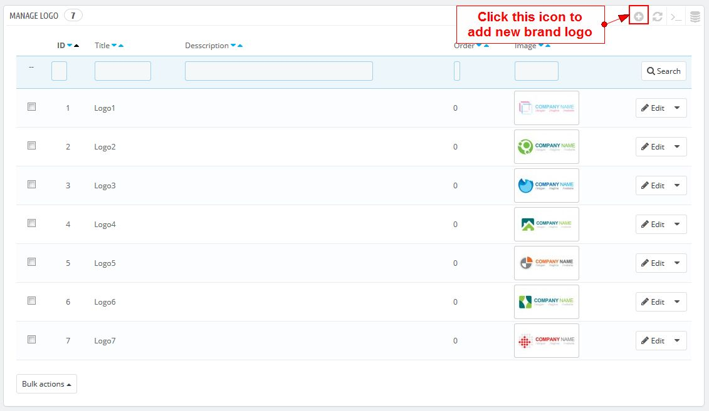
- 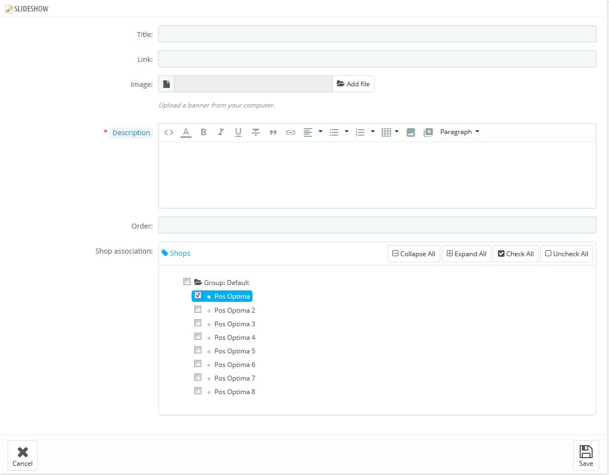
- Click “Save” when you finish
- How to edit logo in slider
- Login your prestashop admin
- Navigate to Modules > Modules and Services
- Choose “Installed modules” tab
- On Pos Logo , click "Configure" button.
-
- Click “Go to Manage Logo”

- 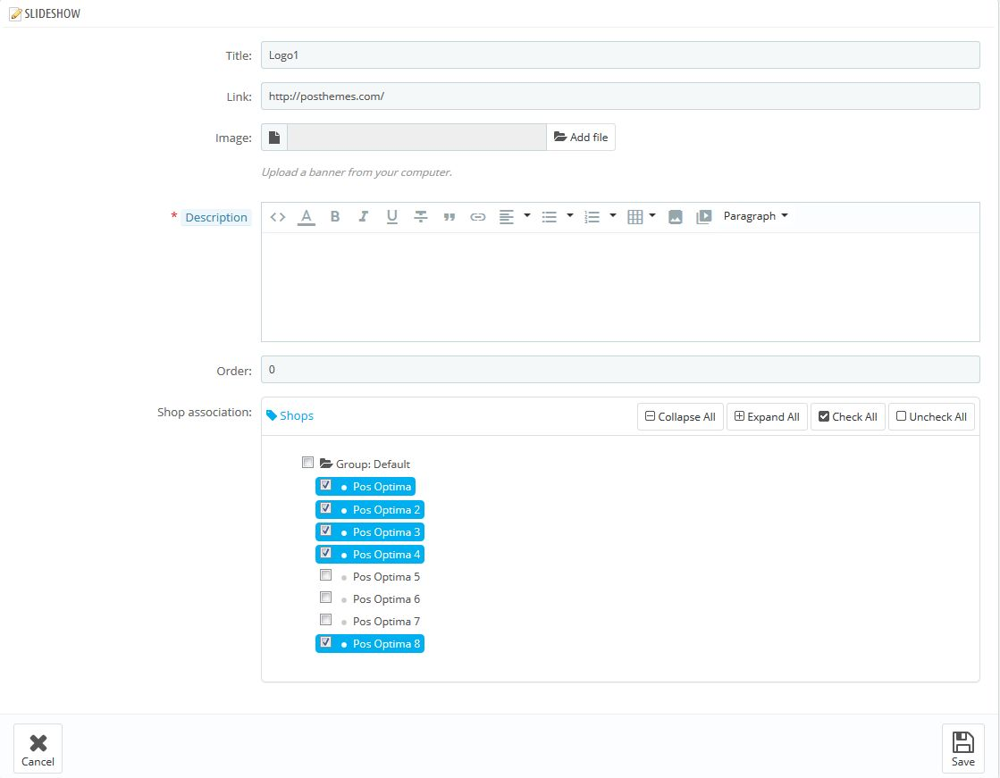
- Click “Save” when you finish
Pos list categories
Module show list categories with thumbnail which display in homepage .
- 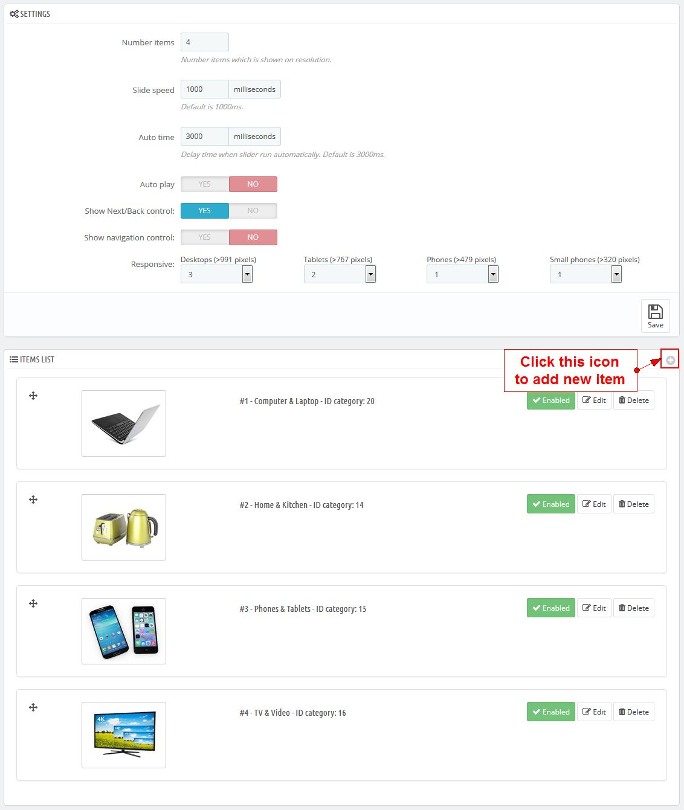
Pos list category products
Module show products from categories which display in homepage.

* Note:
- Select item if you want to edit images below each category
- 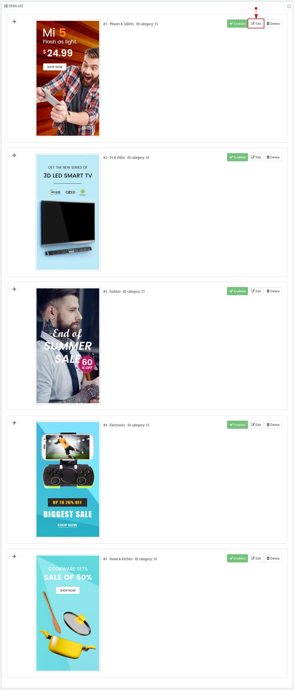
- At "Image/Thumbnail ", you can change images to display on homepage.
- 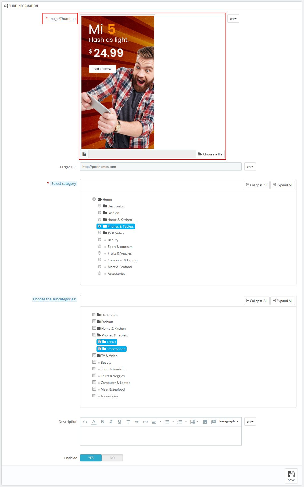
Category Tab Slider
Module which allows to show categories as tab on homepage
- 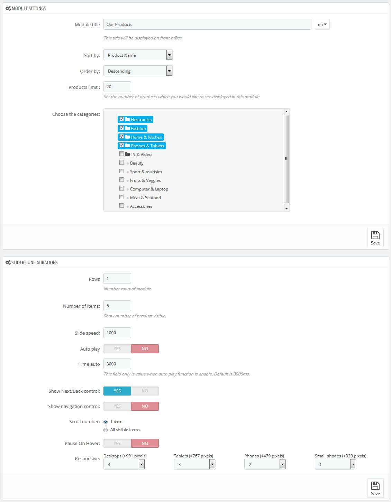
Pos New Products module
Shows new products in slider on hompage.

How to set days for new products
- Login your prestashop admin
- Navigate to Preferences > Products


- In "Products (GENERAL)", enter "Number of days for which the product is considered 'new'"
- Click "Save" button.
Pos Special Products module
Shows specials products in slider on hompage

How to set a product as discount product:
- Login your prestashop admin
- Navigate to Catalog > Products
-

- Choose item you want to edit, click Edit
- Choose tab “Prices”
- 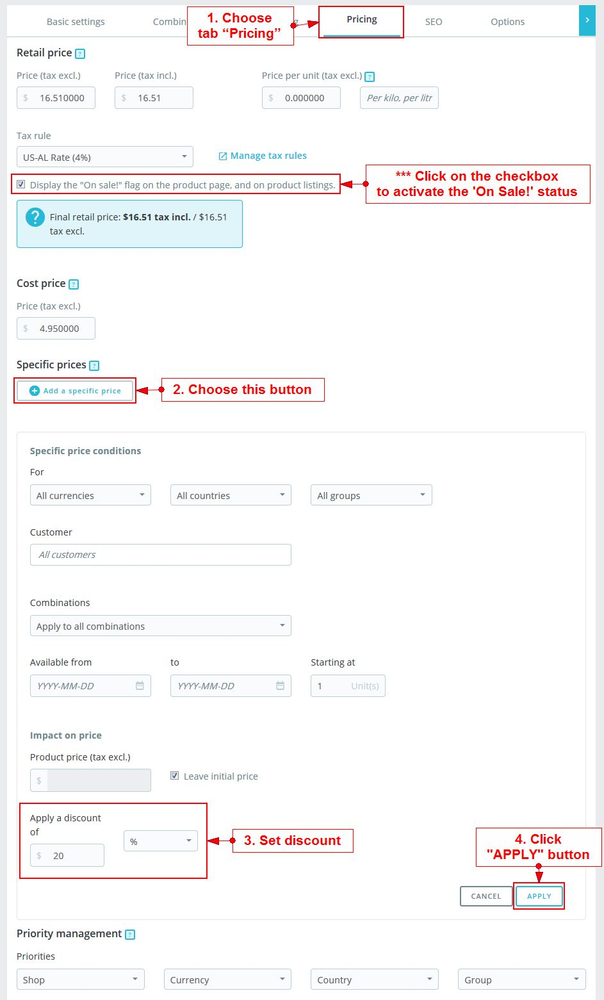
- From the Prices data tab, look for a checkbox with the description "Display the 'on sale' icon on the product page, and in the text found within the product listing" Click on the checkbox to activate the 'On Sale' status.

- Click on the Save and Stay button.
- 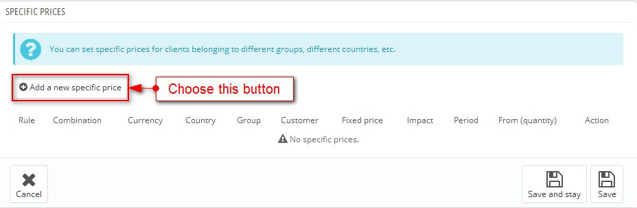

- Click "Save" button
Pos Countdown time price
Countdown time price comes with sale products.
Configure:
When you config “Pos Countdown time price” module, choose “Disable” if you don’t want to show countdown time.

Set time for discount product: Select this check box to limit the duration that a discount is valid.
- You set product as discount product. Please see in Pos Special Products module
- From the Specific Prices tab, when you Add a new specific price, you choose discount prior and set discount:
- from: Select a beginning date for this discount.
- to: Select an expiration date for this discount. 
- Click "Save" button
Pos Featured Products module
Shows products from selected category on homepage
- 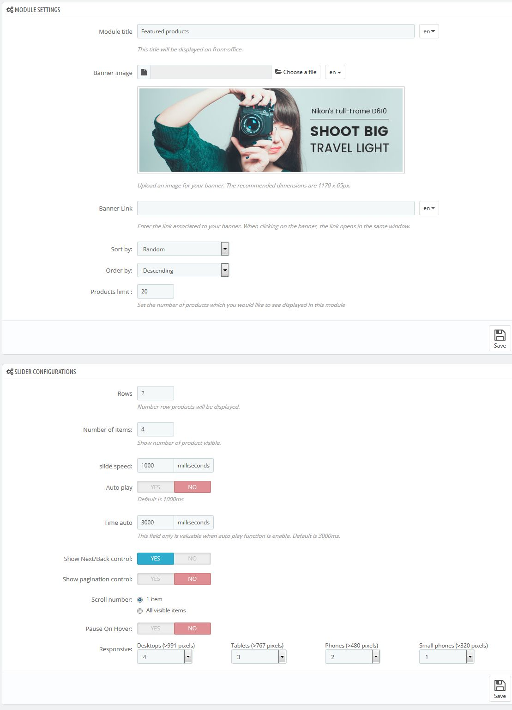
How to set a product as featured product: Home category is used for featured module.
- Login your prestashop admin
- Navigate to Catalog > Products
-

- In "Filter products by category", select Home. You can control order of products in this module.
- Click "Save" button
Pos Random Products module
Show random products on homepage
- 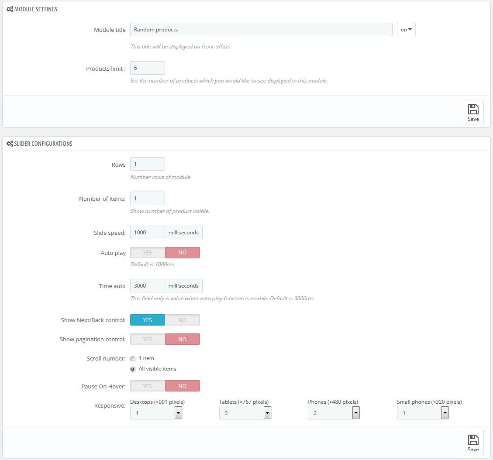
Pos Bestseller products
This module displaying your current bestseller products

Pos search products by category
With this module, customers will be able to find exactly what they're looking for in seconds.
- 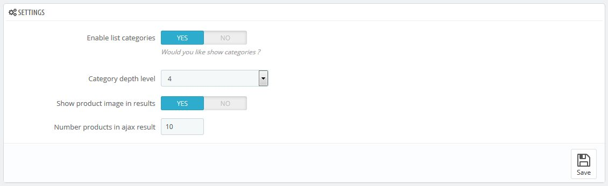
Rotator img
This module allows you to rotate product image.

How to set rotator image for each product
- Login your prestashop admin
- Navigate to Catalog > Products
-
- Choose the product you want to edit
- 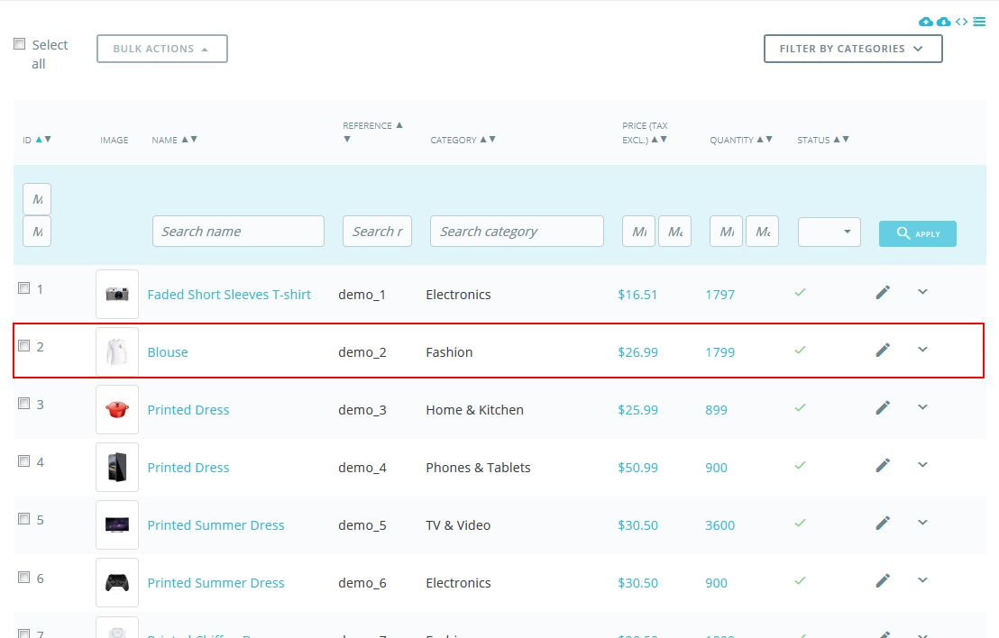
- Click on the Basic settings tab -> Choose image then set rotator for this image

- Click "SAVE IMAGE SETTINGS" button.
Vertical Mega Menu Customer
Allow you show vertical category navigation with subcategories follow the columns are configured.
- How to add new menu item
Vertical Mega menu Customer module supports multiple types of menu as Pos Megamenu Customer module. This module also supports 6 link types: CMS, Supplier, Manufacturer, Categories, Products, Mega menu Top Links. To add new menu item, you click "Configure" on Vertical Mega menu Customer module. After that, you add 6 link types as Megamenu Customer module
- How to add Static Block to popup of a specify category
- In order to display a custom block with images or other html content in the popup, use the Static Block (PosExtensions -> Manage Staticblocks) with the Identify of category like "pt_ver_menu_idcat_[ID Category]".
- Default the custom block will be show at the bottom of the popup. But if you want to show it on the right/left of the popup, just use the ID like “pt_ver_menu_idcat_[ID Category]_right”/“pt_ver_menu_idcat_[ID Category]_left”

Add Thumbnail images
- 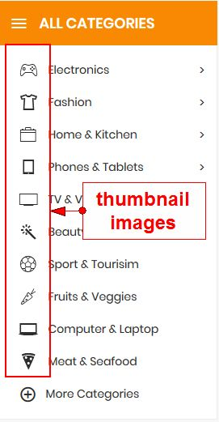
- Login your prestashop admin
- Navigate to Catalog > Categories
-
- 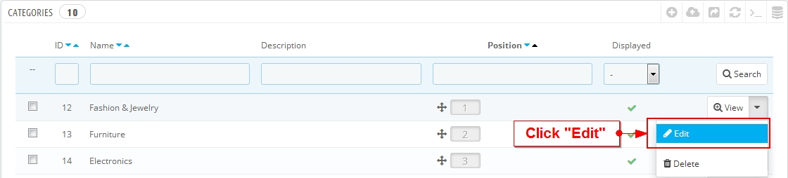
- Choose category you want to add thumbnail, click Edit

- 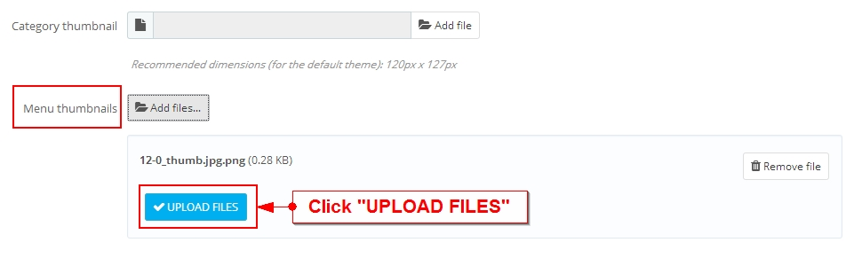
- Click “Save” button when you finish.
Note : You can choose thumbnail images with .jpg format. Howerver, you should follow the below guide before that add thumbnails:
- Login your prestashop admin
- Navigate to Preferences > Images
- 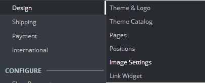
- 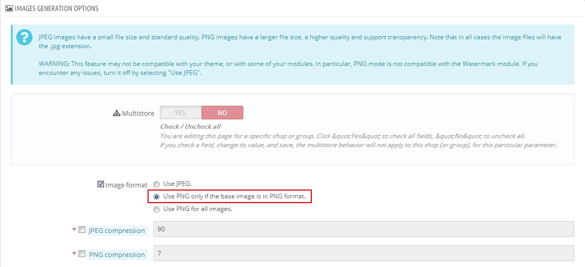
- Click “Save”
Other modules
- Xpert Blog Display Posts on Home Page
- About Xpert Blog Display Posts on Home Page module
- Login your prestashop admin
- Navigate to Xpert Blog
- 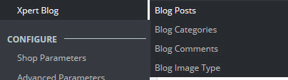
- Blog Posts : Add, Delete or Edit Posts of Blog
- Blog Categories : Add, Delete or Edit Categories of Blog
- Blog Comments : Manage Comments
- Blog Image Type : Manage type of images
- Add Blog Post
- Login your prestashop admin
- Navigate to Xpert Blog > Blog Posts
- 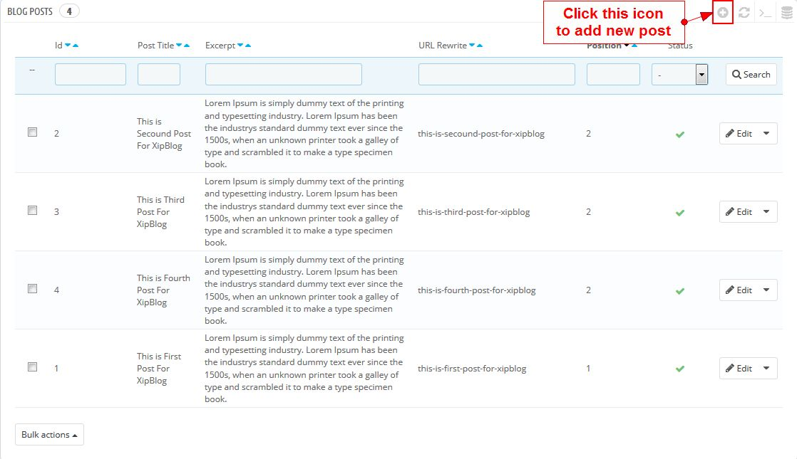

- Click “Save” button when you finish.
- Edit Blog Post
- Login your prestashop admin
- Navigate to Xpert Blog > Blog Posts
- Choose item you want to edit, click Edit
- Then edit
- Click “Save” button when you finish.
- About Xpert Blog Display Posts on Home Page module
- Link List
Link List allow you add a block with several links.
Note: After that, ticking the checkbox to display link on homepage
- Newsletter subscription
- Faceted search
Displays a block allowing multiple filters.
- 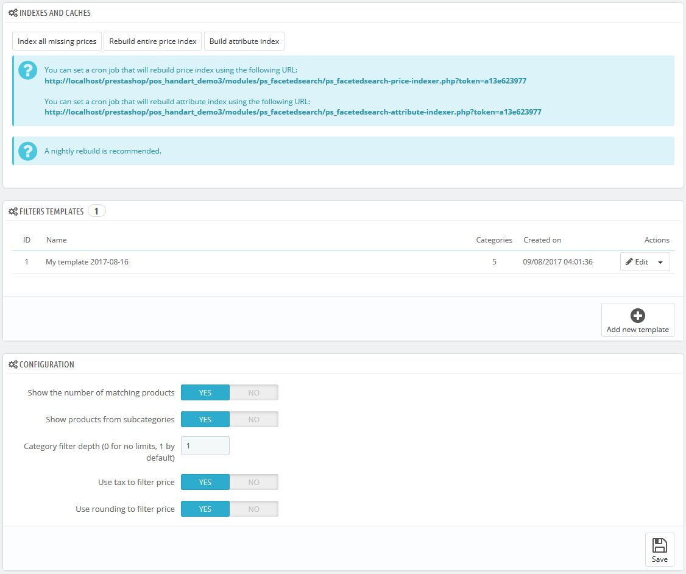
- Products in the same category
Products in the same category show products on the same category.
- Social media follow links
Social media follow links allows you to add information about your brand's social networking accounts
- Social media share buttons
Social media share buttons displays social media sharing buttons (Twitter, Facebook, Google+ and Pinterest) on every product page


Translate Volga template
Installed Modules
- Login your prestashop admin
- Go to International > Translations

- At "Modify translations" section:
- Type of translation : Translate anything in Prestashop (and not just modules)
- Select your module : Select the module that you want to translate
- Select your language : Choose language you want to translate
- Choose Modify
- Then Search titles or text need translate
- After typing your language, click Save and stay or Save to finish.
- In the footer, you can choose another module for translation.

- Note: To find more informations, please read on http://doc.prestashop.com/display/PS17/Translations
Example: In Volga 1, you want to translate title All categories of Vertical Mega Menu Customer module from English to Arabic.
- Login your prestashop admin
- Go to International > Translations
-
- At "Modify translations" section:
- Type of translation : Choose “Installed modules translations”
- Select your theme : Choose “Vertical Mega Menu Customer”
- Select your language : Choose “Arabic”
- Choose Modify
- Then Search All categories to translate
- After a translation has been completed, click Save and stay or Save to finish.
Staticblock content
- Login your prestashop admin
- Navigate to Modules > Modules and Services
- Choose “Installed modules” tab
- On Pos Staticblock or Pos Static Footer module, click "Configure" button.
-
- Click "Edit" button of your selected block.
- Choose Source Code to show code HTML of this block in English. Then copy source code.
- Click to choose language you want to translate
- Choose Source Code and paste code HTML. Then translate
- Click Save button when you finish
Example: In Volga 1, you want to translate text Copyright Posthemes. All Rights Reserved of Copyright block from English to Arabic.
- Login your prestashop admin
- Navigate to Modules > Modules and Services
- Choose “Installed modules” tab
- On Pos Static Footer module, click "Configure" button.
-
- At Copyright block, click "Edit" button.
- Choose Source Code to show code HTML of this block in English. Then copy source code.
- Click to choose Arabic
- Choose Source Code and paste code HTML. Then translate to Arabic
- Click Save button when you finish
Translate text in Pos Slideshow Slider
- Login your prestashop admin. Click "All shop", select the theme you want to translate
- Navigate to Modules > Modules and Services
- Choose “Installed modules” tab
-
- On Pos Slideshow Slider module, click "Configure" button.
-
- At SLIDES LIST section, click "Edit" button of your selected slide.
- Click of each value of parameters (Slide title, Caption or Description) to choose language then translate.
- Enter your language & click Save button when you finish
Posthemes Support
Support Working time: Monday - Friday
Estimated ticket and answers review time: 1-3 business days.
We have hundreds of questions and provide answers asap, but this can take up to 3 days after your submitted request. Please be patient and wait for answer.
http://www.posthemes.com/tickets/